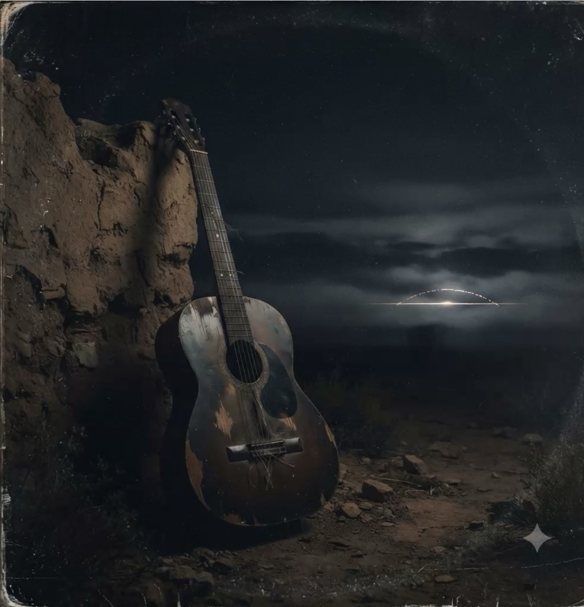

BẠN HỠI
THI ÂM

Bạn hỡi những vần thơ tẻ nhạt
Như rượu tàn xin bạn chớ băn khoăn
Ai cũng có một trái tim nóng hổi
Và giấc mơ bay về phía chân trời
Nhưng trân trời giăng mây mờ xám ngắt
Mang bão dông dày xéo những tâm hồn
Trôi lăn lóc trong những dòng nước đục
Mưa dầm dề trên những giấc mơ oan
Run rủi tôi làm người du tử
Lang thang qua những xa mạc khô cằn
Bạn với gió và trăng khuya vắng vẻ
Tự vấn mình ta thực sự là ai ?